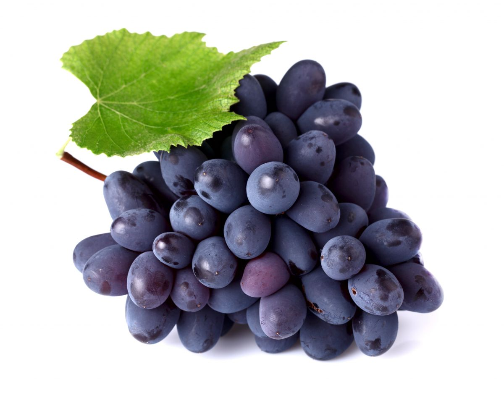

Freshness You Can Trust

Black Grapes are sweet, juicy, and highly nutritious fruits that are rich in vitamins C and K, dietary fiber, potassium, and powerful antioxidants such as resveratrol. They help improve heart health, boost the immune system, support healthy digestion, protect cells from damage, and promote healthy skin. Black Grapes also help keep the body hydrated and provide natural energy. They can be enjoyed fresh, in fruit salads, juices, smoothies, or desserts.